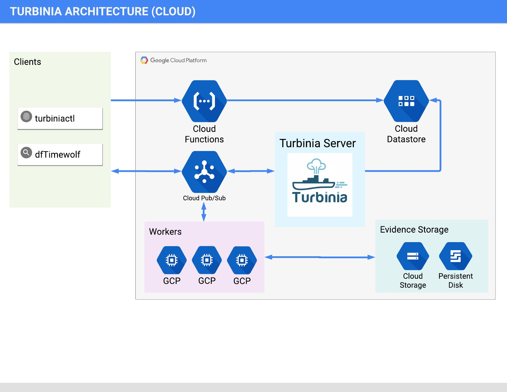
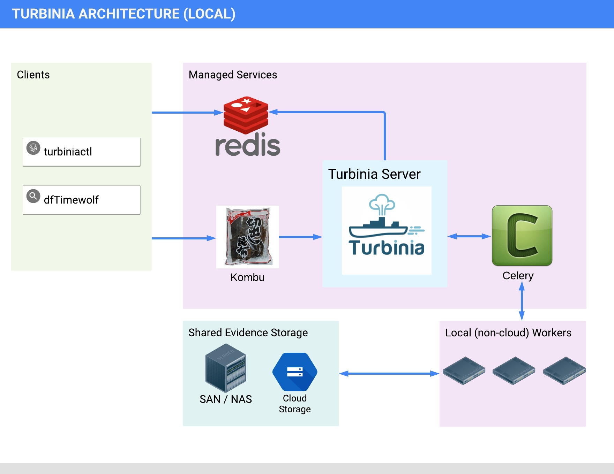
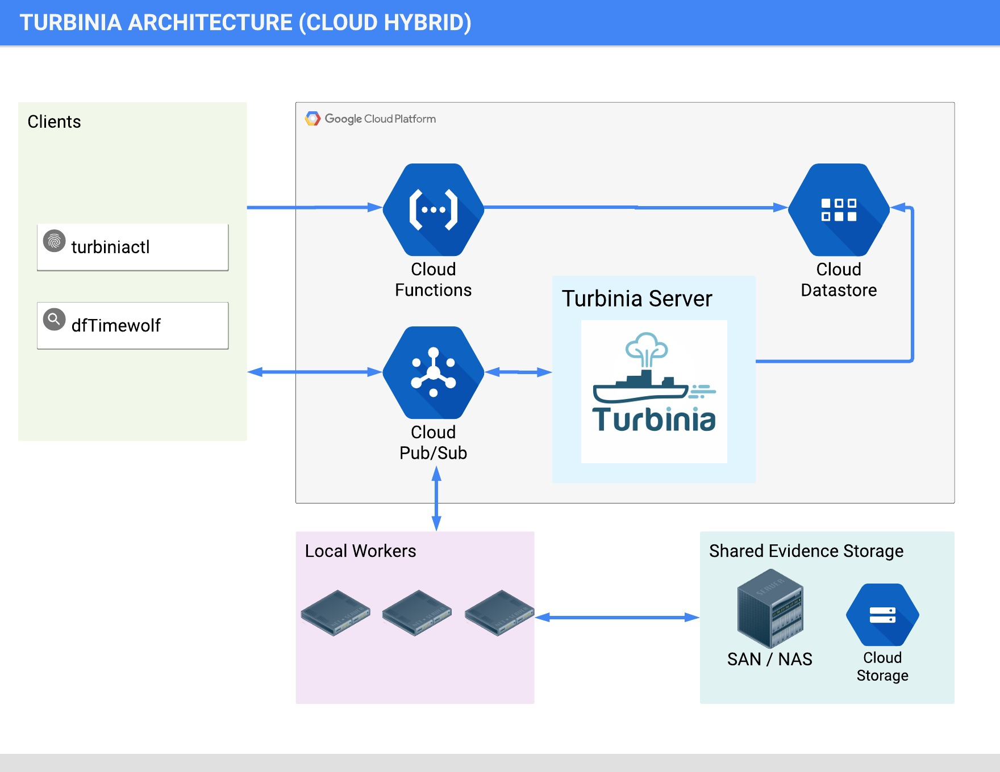

How Turbinia Works¶
General¶
This page contains some of the details on the internals of how Turbinia works.
Architecture¶
Turbinia can run its components completely in the Cloud, on local machines, or as a hybrid of both. When running in hybrid mode, Turbinia uses Cloud services, but the workers and the Turbinia server run locally. Running locally or in hybrid mode requires shared storage to be accessible by all Workers.
Cloud Architecture¶

Local Architecture¶

Hybrid Architecture¶

Tasks¶
A Task is the smallest discrete unit of schedulable work. Tasks are scheduled and executed on remote Workers. A Task can generate more Evidence that is returned back to the Turbinia server for possible further processing.
Jobs¶
A Job is a larger logical unit of work that creates one or more Tasks to process that work. A Job can either create a single Task, or it can break up that work and create multiple Tasks. Sometimes these terms are used interchangeably (though we mostly talk about things in terms of Tasks) because in most cases a Job will just create a single Task.
Workers¶
Workers are independent processes that run either in Cloud GCE instances or on local machines. They run continuously and wait for new Tasks to be scheduled. When a new Task is scheduled, a pseudo-random worker will pick up the Task and execute it. After the Task is complete (successfully or not), the Worker will return the status, any error logs and results.
Evidence¶
Evidence can be anything that Turbinia can process. Examples include disk images, cloud disks, Plaso files, strings files, etc. When you make a request to Turbinia only the metadata for the evidence is passed into the request, but it contains pointers to where the data is.
New Evidence¶
If you want to create a new Evidence type, they are simple Python objects in evidence.py. You can use object inheritance (e.g. an GoogleCloudDisk is a subclass of a RawDisk) if you have multiple related Evidence types.
Evidence Processors¶
Each Evidence object can have a pre- and post-processor that prepares Evidence
prior to Task execution and cleans up afterwards. Evidence pre-processors run
on the Worker node just prior to Task execution, and post-processors run after
the task execution is complete. Processors can be used to do things like attach
a Cloud Persistent Disk or mount a local disk. Because of the inheritance that
comes from how Evidence objects are defined in code, these processors can be
stacked together to run multiple Processors. An example of this is the
GoogleCloudDiskRawEmbedded Evidence type which is a GoogleCloudDisk that
contains a RawDisk image file. For this Evidence type, the Processor for the
GoogleCloudDisk runs first to attach the disk to the worker, and then the
Processor for the RawDisk runs to mount the “inner” raw disk image.
Copyable Evidence¶
Some types of Evidence can be marked as “copyable”. What that means is that this
kind of Evidence can be copied around as needed (either to make it available for
a new Task to use it, or to copy it off of a Worker after the Task has
completed). This is handled transparently by the Output Manager when it is
configured. An example of this is the PlasoFile Evidence type. Right now the
only storage that the Output Manager supports is Google Cloud Storage. If
Evidence is not copyable (like a RawDisk) and not a Cloud Evidence type (as
denoted by the cloud_only attribute), then you will need to have a shared disk
that is available to all Workers.
Task Manager¶
The Task Manager runs in the server and acts as a broker between the clients and workers and handles management of Evidence, Jobs, Tasks and Workers. It will keep state on these objects while the processing request that generated them is still ongoing.
Task Manager Flow¶
Jobs are configured to process specific Evidence types, and if the Task Manager sees a new piece of Evidence (either from a new Turbinia request, or because another Task generated a new piece of Evidence), and there is a Job that is configured to run for that type of Evidence, then the Task Mananger will create a new Job for it. The Job then generates one or more Tasks which will be immediately scheduled for execution.
Here is a breakdown of what happens during a typical processing request:
The client sends a processing request to the server along with the Evidence to process
The server creates new Jobs for each Job type that can process that Evidence type
The Job generates one or more Tasks
The Task Manager schedules the Tasks to be executed
Workers from the pool pick up the Tasks for execution
Tasks read the Evidence to process from shared storage or copy it from cloud storage
The Task runner pre-processes the Evidence
The Task performs the actual processing and potentially generates new Evidence
The Task runner post-processes the Evidence
Any newly generated Evidence data will be saved to storage by the Output Manager
Tasks return results and any new Evidence to the Server
The Task Manager records the Task results into Datastore/Redis
The Task Manager picks up the newly created Evidence and restarts this processing loop